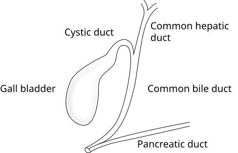

Gall bladder and cystic duct
Shape and Location
Pear shaped or piriform shaped hollow structure
Under surface of liver
Related to Couinaud segments – 4b and 5
Extension
From right end of porta hepatis
to
Inferior surface of liver
Dimensions
7 to 10 cm in length
Volume - about 50 ml
Parts
Fundus
Body
Neck

Fundus of gall bladder
- Has round base
- Related to inferior border of liver
- surface projection at junction of right midclavicular line and rigth costal margin
- May be palpable at the tip of 9th costal cartilage
- Covered with peritoneum
- Related anteriorly to abdominal wall
- Posteriorly related to transverse colon
Body of the gall bladder
- Located within the gall bladder fossa
- Superior surface - no peritoneal covering, directly related to liver parenchyma
- Related to transverse colon and duodenum
- Continues proximally with neck of gall bladder
Neck of gall bladder
- Near the right end of porta hepatis
- Continues proximally with cystic duct
- Related to duodenum (1st part)
Hartmann’s pouch
- Dilated posteromedial wall of neck at the junction of neck and cystic duct
- A normal variation
- Gall stone may lodge here
Cystic duct
- Extends from neck of gall bladder to common hepatic duct
- Related to pylorus of stomach
- 3 to 4 cm in length
- Has many spiral mucosal infoldings
Common bile duct
- Formed by union of common hepatic duct and cystic duct
- Drains bile into second part of duodenum along with pancreatic duct in major duodenal papilla
- The entry is guarded by sphincter of Oddi
- Usual diamter in adults - < 8mm
Gall stones may clog in common bile duct (Choledocholithiasis)
Calot's triangle or Cystohepatic triangle
Boundaries
- Inferiorly - Cystic duct
- Medially - Common hepatic duct
- Superiorly - inferior surface of liver
Contents
- Cystic artery
- Lymph node of Lund
- Variations - accessory right hepatic artery, anomalous sectoral bile ducts
Importance
- Cystic artery is located in this triangle during laparoscopic cholecystectomy
Dissection in the triangle of Calot is the most common cause of common bile duct injuries. Dissection in the triangle is not advised until the cystic duct is definitively identified.
Cystic plate
- Liver bed of the gallbladder is cystic plate
- Lies in the gallbladder fossa
- Lower one third of the gallbladder is separated from the liver to expose the cystic plate is a step during laparoscopic cholecystectomy.
Arterial supply of gall bladder
By Cystic artery
Branch of right hepatic artery

Test Your Knowledge
Click on your answer to see if you're correct!
1. The fundus of the gall bladder is surface projected at:
2. The body of the gall bladder differs from the fundus because it:
3. Hartmann’s pouch is best described as:
4. The cystic duct joins the common hepatic duct to form the:
5. The common bile duct usually drains into the:
6. The boundaries of Calot’s (cystohepatic) triangle include all EXCEPT:
7. The arterial supply of the gall bladder is mainly from:
8. The cystic plate refers to: